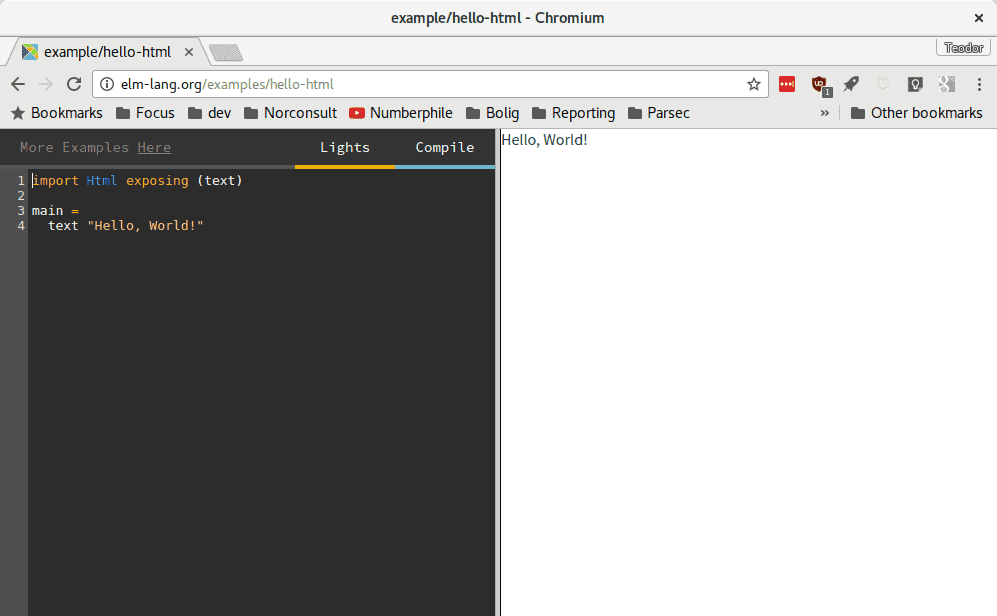

Denne oppgaven er en lett omvisning til Elm. Vi skal se på hva Elm egentlig er
før vi laster ned og installerer en masse ting, så det eneste vi trenger er en
nettleser.
Elm kjører i nettleseren. I nettleseren viser vi fram ting med noe som heter
HTML. Det er viktig å forstå hva HTML er.
Gjør oppgaven Hvor er HTML? Jeg ser den ikke!
i Web-kurset først om du ikke har hørt om HTML før.
Trykk på Hello, World! til høyre, så får vi se et enkelt Elm-program:

Hmm! Det gjorde ikke så mye. Skrev kun ut "Hello, World!" La oss gjøre det
litt mer spennende, og lære Elm norsk. Jeg heter Teodor, så jeg endrer
programmet til følgende:
import Html exposing (text)
main =
text "Hei, Teodor! Godt å se deg!"
Hva heter du? Hva vil du programmet skal skrive ut til deg?
Trykk Compile for å se!
Dokumenter i HTML og Elm
HTML og Elm bygger opp dokumenter som et tre. Det betyr at elementer kan
være inne i andre elementer. Eksempel:
div
h1: Stor overskrift
p: Første avsnitt.
p: Andre avsnitt.
div-elementet inneholder tre elementer: h1, p og p.
Søk i referansen når du lurer på hva en
funksjon gjør.
Forbedre denne siden
Funnet en feil? Kunne noe vært bedre? Hvis ja, vennligst gi oss tilbakemelding ved å lage en sak på Github eller fiks feilen selv om du kan. Vi er takknemlige for enhver tilbakemelding!